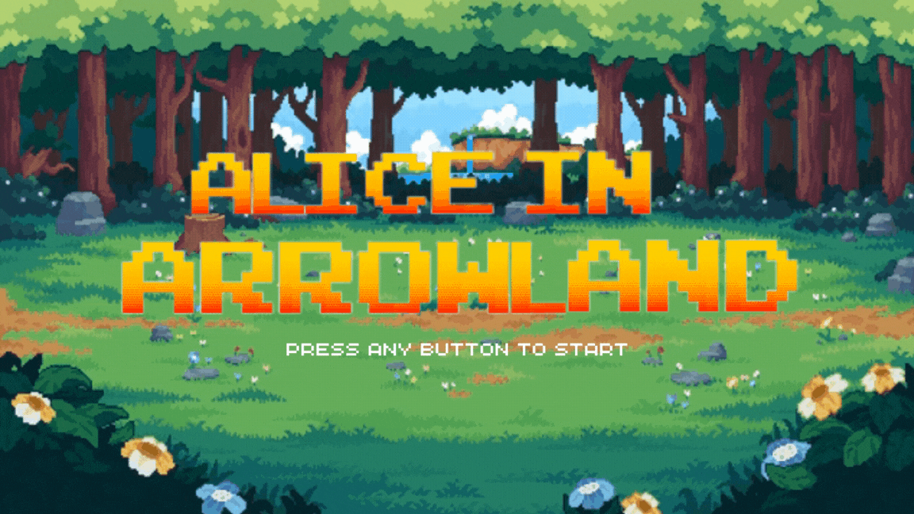
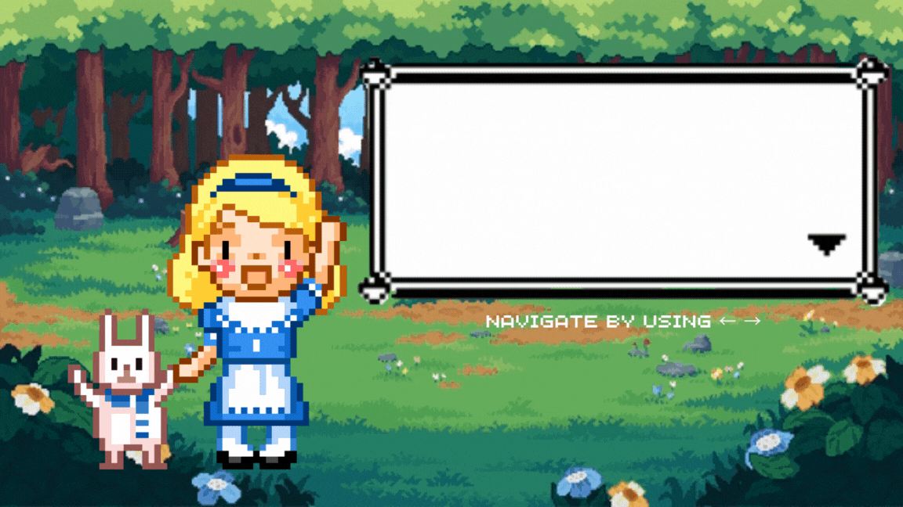
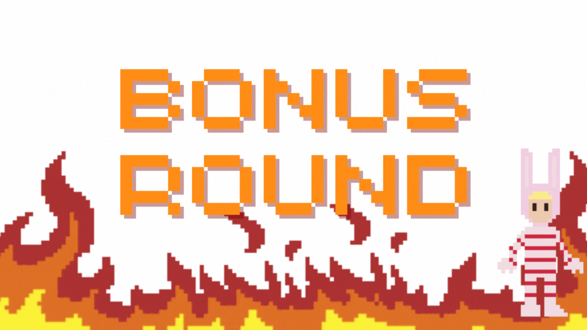
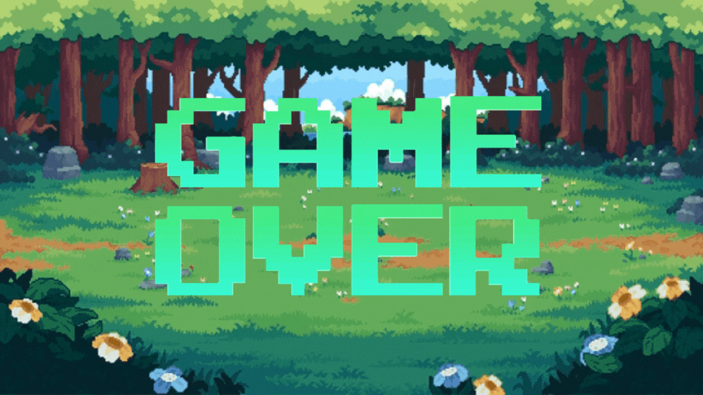

<!-- html comments need to look like this -->

<!DOCTYPE html>
<html lang="en">
<head>
    <title>Page Title</title>
    <meta charset="UTF-8"/>
    <meta name="viewport" content="width=device-width,initial-scale=1"/>
    <meta name="description" content=""/>
    
    <script src="js/jspsych.js"></script>

    <script src="plugins/plugin-html-keyboard-response.js"></script>
    <script src="plugins/plugin-instructions.js"></script>
    <script src="plugins/plugin-preload.js"></script>

    <link href="css/jspsych.css" rel="stylesheet" type="text/css"/>

    <link rel="preconnect" href="https://fonts.googleapis.com">
    <link rel="preconnect" href="https://fonts.gstatic.com" crossorigin>
    <link href="https://fonts.googleapis.com/css2?family=Pixelify+Sans&display=swap" rel="stylesheet">


    <style>
        .container {
            position: relative;
            width: 1000px;
            height: 600px;
            display: flex;
            align-items: center;
            justify-content: center;
        }

        .arrowsContainer {
            width: 1000px;
            max-height: 400px;
            display: flex;
            align-items: center;
            justify-content: center;
            flex-wrap: wrap;
        }

        .complexFlanker {
            display: flex;
            flex: 0 0 calc(33.33% - 10px);
            justify-content: center;
        }

        .complexFlanker img {
            width: 100% !important;
            height: auto;
        }

        .normalFlanker {
            width: 15%;
            height: 180px;
            margin: 0px 10px 0px 10px;
            padding: 0; 
            display: flex;
            align-items: center;
            justify-content: center;
            font-size: 1.5em;
        }

        .normalFlanker img {
            max-width: 150% !important;
            height: auto;
        }

        .instruction {
            position: relative;
            display: inline-block;
        }

        .instructionText {
            width: 45%;
            position: absolute; 
            top: 15%; 
            left: 45%; 
            z-index: 1; 
            font-family: 'Pixelify Sans', sans-serif;
            font-size: 1.8em;
        }
        
        .score {
            font-size: 2em;
            position: absolute;
            top: 10px;
            right: 10px;
            font-family: 'Pixelify Sans', sans-serif;
        }

        .level {
            font-size: 2em;
            position: absolute;
            top: 10px;
            left: 0px;
            font-family: 'Pixelify Sans', sans-serif;
        }
    </style>
</head>

<body>

<script>

    function saveData() {

        let data = jsPsych.data.get()
        data = data.join(jsPsych.data.getInteractionData())
        data = data.csv()

        let d = new Date();
        let name = d.getFullYear() + "-" +
            (d.getMonth() + 1) + "-" +
            d.getDate() + "_" + d.getHours() +
            d.getMinutes() +
            d.getSeconds() + "_" +
            jsPsych.randomization.randomID(8);

        var url = '/save_data.php';
        var data_to_send = {filename: name, filedata: data};
        fetch(url, {
            method: 'POST',
            body: JSON.stringify(data_to_send),
            headers: new Headers({
                'Content-Type': 'application/json'
            })
        })
        .then(response => {
            if (response.ok) {
                return response.json(); 
            } else {
                throw new Error('Network response was not ok.');
            }
        })
        .then(data => {
            if (data.success) {
                console.log("data saved");
            } else {
                console.error('Data not saved:', data.message);
            }
        })
        .catch(error => {
            console.error('Fetch error:', error);
        });
    }

    const jsPsych = initJsPsych();

    var arrowImages = ["arrow-right", "arrow-left", "arrow-up", "arrow-down"];
    var colors = ['blue', 'green', 'purple', 'red'];

    var timelineVariables = [
        {arrow: 'arrow-up', key: 'arrowup'},
        {arrow: 'arrow-right', key: 'arrowright'},
        {arrow: 'arrow-down', key: 'arrowdown'},
        {arrow: 'arrow-left', key: 'arrowleft'}
    ];
    var sampleSize = 2;

    var score = 0;
    var level = 0;

    function constructFlanker(chosenArrow, numberOfArrows, complexity) {
        if(level > sampleSize * 5 - 1 || typeof level == "string") {
            level = "BONUS";
        }
        else {
            level++;
        }

        let output = `<div class="container">
                        <div class="score">
                            <h3>Score: ${score}<h3>
                        </div>
                        <div class="level">
                            <h3>Level: ${level}<h3>
                        </div>
                        <div class="arrowsContainer" ${complexity == 3 || complexity == 4 ? `style="width:580px"` : ""}>`;
        let className = "normalFlanker";
        
        if(complexity == 3 || complexity == 4) {
            className = "complexFlanker";
        }

        let randomArrow = arrowImages[Math.floor(Math.random() * arrowImages.length)];

        for(let i = 0; i < numberOfArrows; i++) {
            let arrow;

            if(i == Math.floor(numberOfArrows / 2)) {
                arrow = chosenArrow;
                if(complexity == 2) {
                    randomArrow = arrowImages[Math.floor(Math.random() * arrowImages.length)];
                }
            }
            else {
                arrow = randomArrow;
            }

            if(complexity == 3 || complexity == 4) {
                randomArrow = arrowImages[Math.floor(Math.random() * arrowImages.length)];
            }

            if(complexity == 4) {
                output += `<div class="${className}"></div>`;
            }
            else {
                output += `<div class="${className}"></div>`;
            }
        }

        output += `</div>
                </div>`;

        return output;        
    }

    let preload = {
        type: jsPsychPreload,
        images: [
            'images/title-page.gif',
            'images/instruction-page.gif',
            'images/game-over-page.gif',
            'images/bonus-round-page.gif',
            'images/arrow-down.png',
            'images/arrow-left.png',
            'images/arrow-right.png',
            'images/arrow-up.png',
        ]
    }

    let titlePage = {
        type: jsPsychHtmlKeyboardResponse,
        stimulus: function() {
            return ``;
        }
    };

    let instructions = {
        type: jsPsychInstructions,
        pages: [
            `<div class="instruction">
                
                <p class="instructionText">Welcome to Wonderland, dear friend. I'm Alice, and I need your help to restore balance in this topsy-turvy world.  
                The Queen of Hearts has woven an enchanted arrow maze – our only escape lies in solving its mysteries.</p>
            </div>`,
            `<div class="instruction">
                
                <p class="instructionText">In this game, you'll encounter a series of arrowImages. 
                Your task is to tell me which way the arrow in the center is pointing by pressing the corresponding arrow key. 
                Can you do that?</p>
            </div>`,
            `<div class="instruction">
                
                <p class="instructionText">Remember, the mischievous surrounding arrowImages might try to confuse you, but stay focused! 
                Let's embark on this adventure together and conquer the Queen's enchantment!</p>
            </div>`
        ],
        show_clickable_nav: false,
    };

    let levels = {
        type: jsPsychHtmlKeyboardResponse,
        on_finish: function(data) {
            if(data.response === jsPsych.timelineVariable("key")) {
                score++;
            }
            else {
                score--;
            }
        },
        trial_duration: 2000,
        timeline: [
            {
                sample: {
                    type: 'with-replacement',
                    size: sampleSize
                },
                timeline_variables: timelineVariables,
                timeline: [
                    {
                        stimulus: function() {
                            return constructFlanker(jsPsych.timelineVariable("arrow"), 3, 1);
                        }
                    },
                ]
            },
            {
                sample: {
                    type: 'with-replacement',
                    size: sampleSize
                },
                timeline_variables: timelineVariables,
                timeline: [
                    {
                        stimulus: function() {
                            return constructFlanker(jsPsych.timelineVariable("arrow"), 5, 1);
                        }
                    },
                ]
            },
            {
                sample: {
                    type: 'with-replacement',
                    size: sampleSize
                },
                timeline_variables: timelineVariables,
                timeline: [
                    {
                        stimulus: function() {
                            return constructFlanker(jsPsych.timelineVariable("arrow"), 5, 2);
                        }
                    },
                ]
            },
            {
                sample: {
                    type: 'with-replacement',
                    size: sampleSize * 2
                },
                timeline_variables: timelineVariables,
                timeline: [
                    {
                        stimulus: function() {
                            return constructFlanker(jsPsych.timelineVariable("arrow"), 9, 3);
                        }
                    },
                ]
            },
            {
                stimulus: function() {
                    return ``;
                },
                choices: "NO_KEYS",
            },
            {
                sample: {
                    type: 'with-replacement',
                    size: 5
                },
                timeline_variables: timelineVariables,
                timeline: [
                    {
                        stimulus: function() {
                            return constructFlanker(jsPsych.timelineVariable("arrow"), 9, 4);
                        }
                    },
                ]
            },
        ],
    };

    let endPage = {
        type: jsPsychHtmlKeyboardResponse,
        stimulus: function() {
            return ``;
        },
        choices: "NO_KEYS",
        on_load: function() {
            saveData();
        }
    }

    let exp_timeline = [titlePage, instructions, levels, endPage]

    jsPsych.run(exp_timeline)
</script>

</body>
</html>